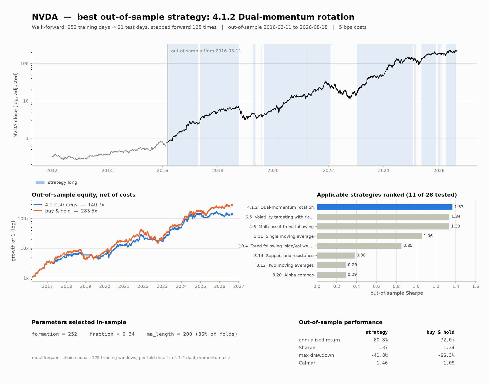
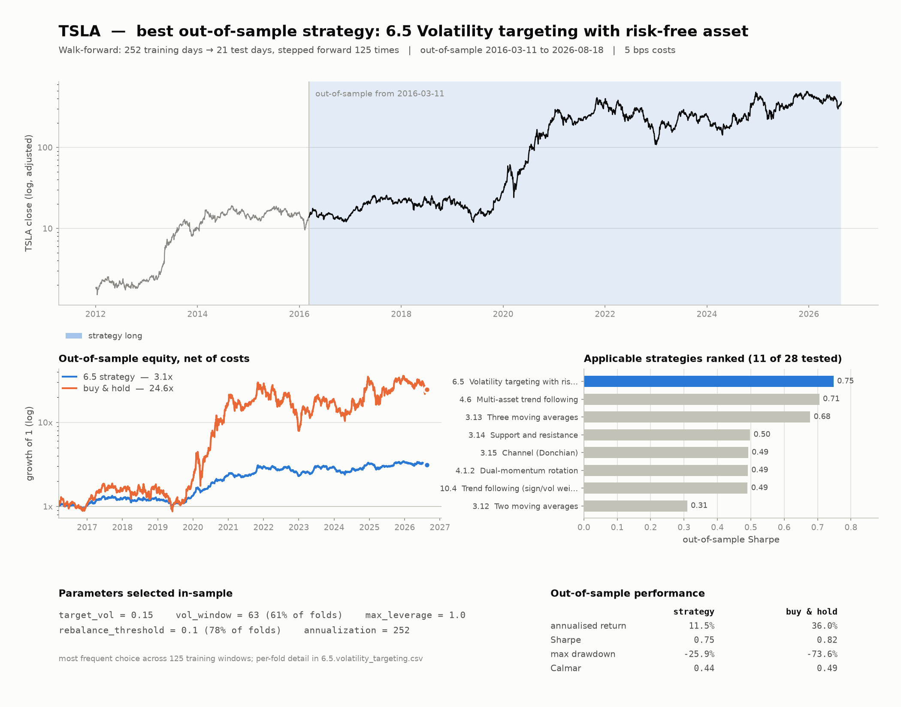
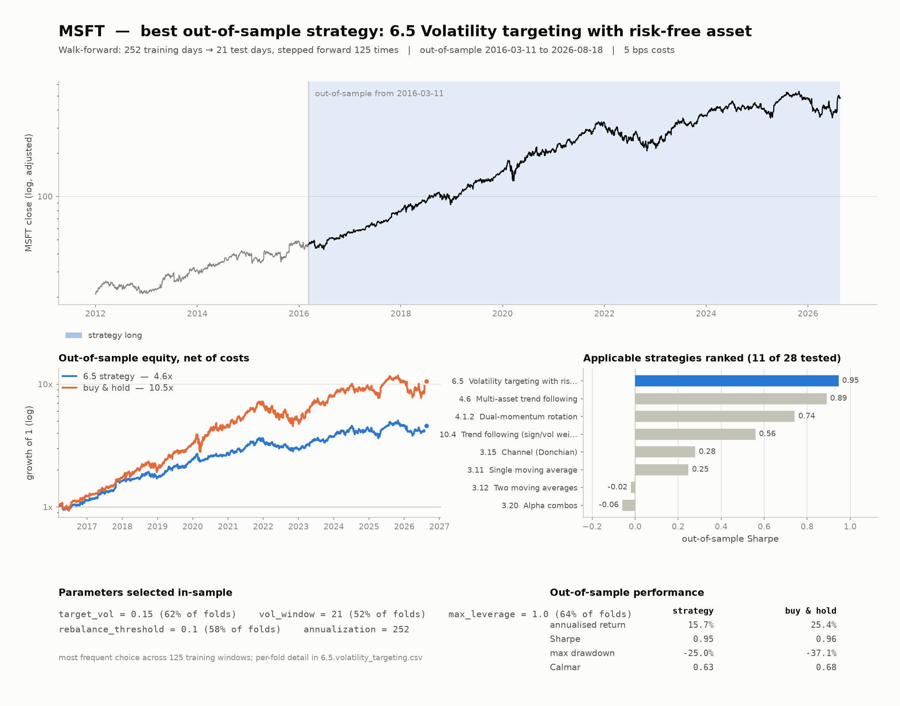
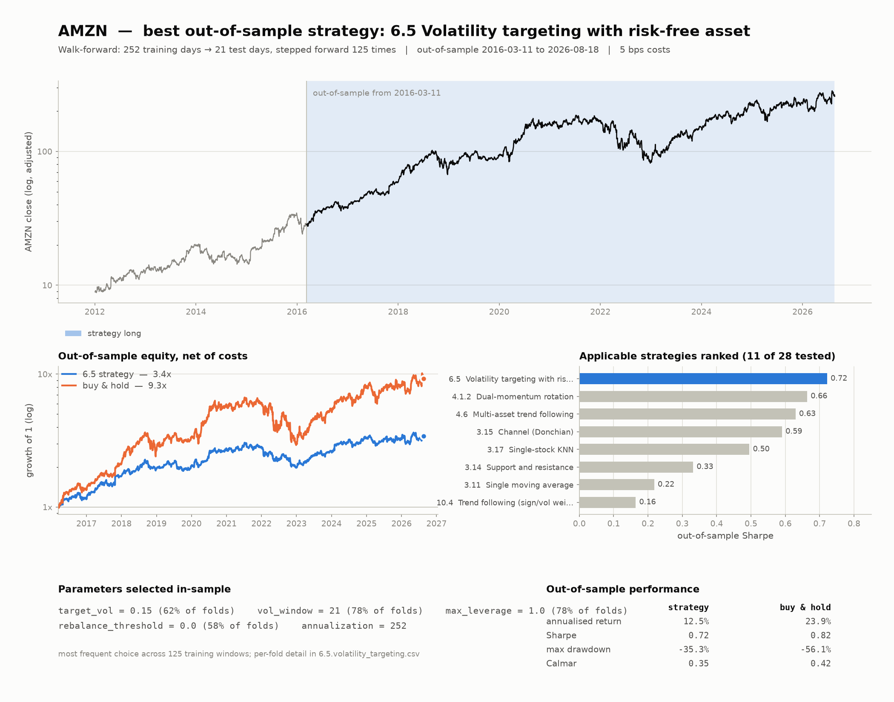
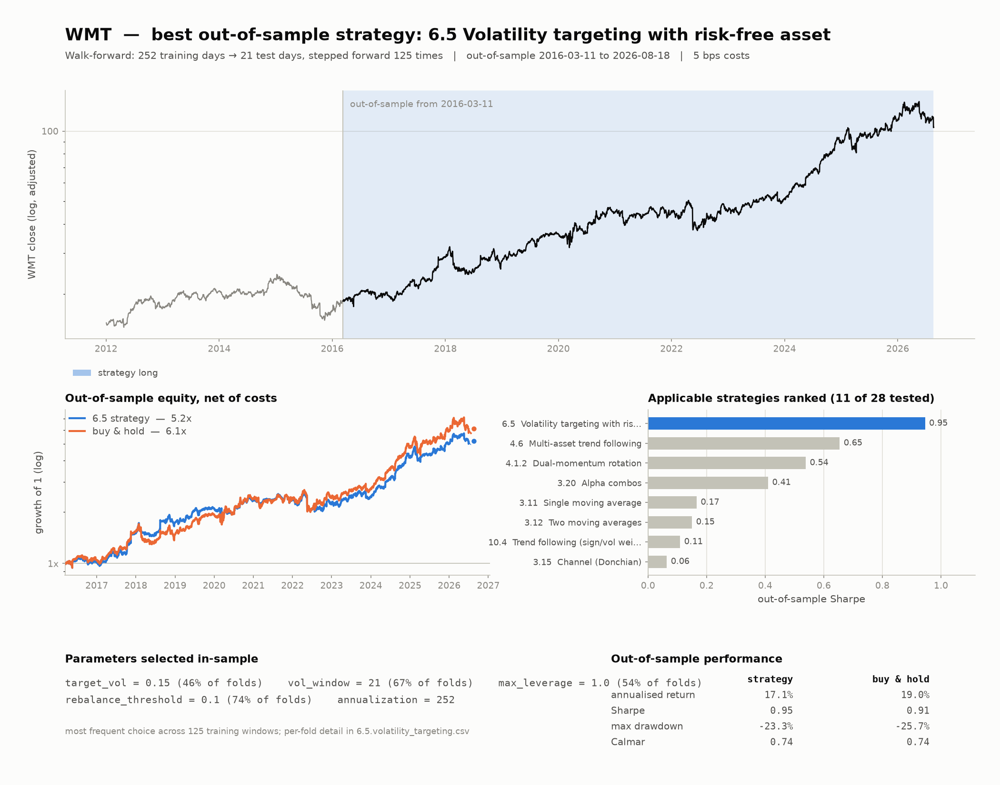
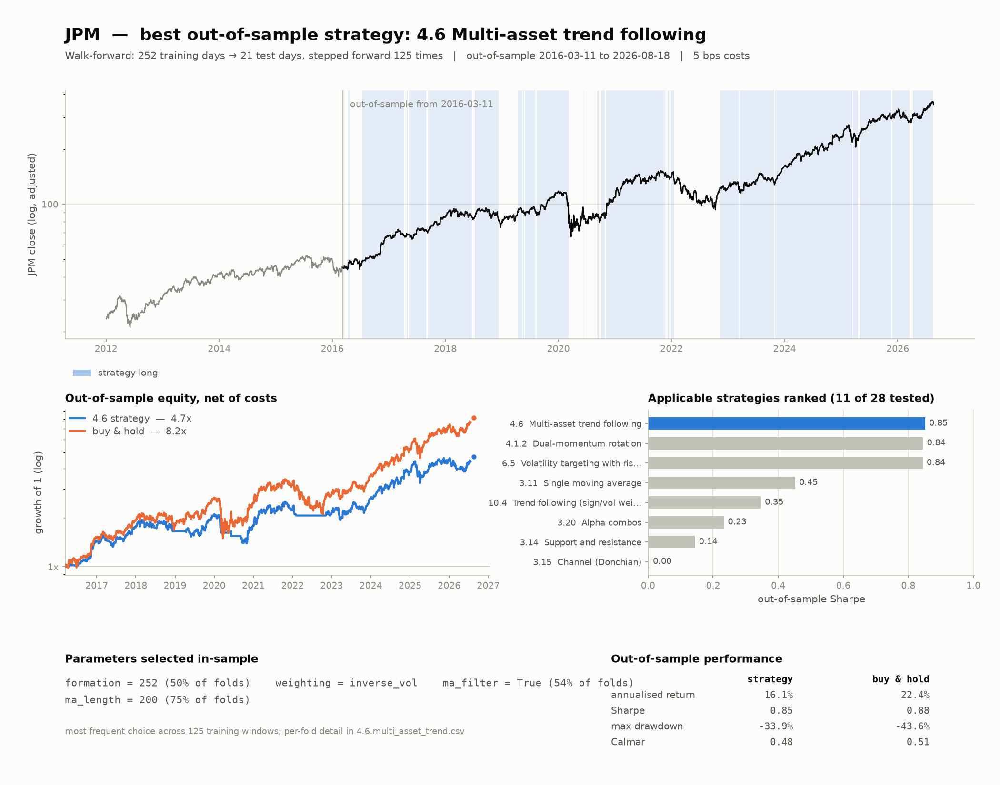

Best strategy per ticker
Walk-forward study generated 202608231534. Full tables in
best_per_ticker.csv and all_results.csv.
NVDA 4.1.2 Dual-momentum rotation

TSLA 6.5 Volatility targeting with risk-free asset

MSFT 6.5 Volatility targeting with risk-free asset

AMZN 6.5 Volatility targeting with risk-free asset

WMT 6.5 Volatility targeting with risk-free asset

JPM 4.6 Multi-asset trend following
